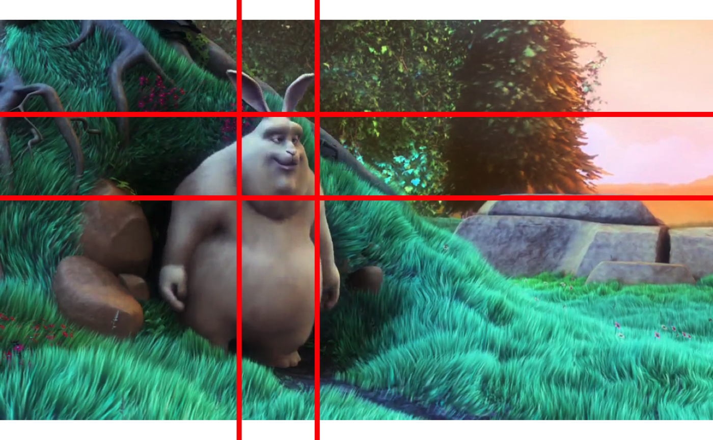

This page describes all basic operations on videos and images.
Video |
Stream |
Image |
VideoWriter |
|
|---|---|---|---|---|
| Testing for | isVideo(x) |
isStream(x) |
isImage(x) |
isVideoWriter(x) |
| Dimensions | dim(x) |
dim(x) |
dim(x) |
- |
| Number of rows | nrow(x) |
nrow(x) |
nrow(x) |
- |
| Number of columns | ncol(x) |
ncol(x) |
ncol(x) |
- |
| Number of channels | - | - | nchan(x) |
- |
| Number of frames | nframes(x) |
- | - | - |
| Framerate | fps(x) |
- | - | - |
| Codec | codec(x) |
- | - | - |
| Bit depth | - | - | bitdepth(x) |
- |
| Color space | - | - | colorspace(x) |
- |
There are two methods for displaying images. The first method offers full compatibility with base R plotting methods, which allows for drawing non-destructively over an image using graphics::lines(), garaphics::points(), etc. This method is however is however rather slow and therefore not suitable for applications requiring quick refresh rates between successive images (e.g. when playing a video).
The second method uses OpenCV’s capabilities to display images at high frame rates, making it suitable to play videos for instance. It is however incompatible with base R plotting functions. However you can use the drawing functions provided with Rvision to draw over images - destructively this time - before displaying them.
path_to_image <- system.file("sample_img", "bunny.png", package = "Rvision") my_image <- image(filename = path_to_image) plot(my_image) abline(h = 400, col = "red", lwd = 5) abline(h = 550, col = "red", lwd = 5) abline(v = 430, col = "red", lwd = 5) abline(v = 570, col = "red", lwd = 5)

path_to_video <- system.file("sample_vid", "Balloon.mp4", package = "Rvision") my_video <- video(filename = path_to_video) # Create an empty display window (note: it can hide behind other windows) newDisplay("My display", nrow(my_video) / 2, ncol(my_video) / 2) # Display images (note: it creates the display window if it doesn't exist yet) # The 3rd argument ('delay') is the minimum time in ms during which the image # should be displayed before it can be replaced for (i in 1:25) { display(readNext(my_video), "My display", 25, nrow(my_video) / 2, ncol(my_video) / 2) } # Close display destroyDisplay("My display") # Close all opened displays destroyAllDisplays()
You can access parts of an image in the same way you would do it with matrices and arrays in base R.
my_image[] # Entire image my_image[1, 1] # Bottom-right pixel my_image[1, ] # Bottom row of pixels my_image[, 1] # Leftmost column of pixels my_image[1:5, 1:5] # All pixels between the 1st and 5th row and column my_image[c(TRUE, FALSE), c(TRUE, FALSE)] # Every other row and column of pixels
Note that images are not exactly like traditional matrices. Color images have multiple layers, each corresponsing to a dimension in the BGR or BGRA space (Blue, Green, Red, Alpha transparency). Therefore, when accessing a pixel of a color image, you will obtain 3 or 4 values in return. Grayscale images, on the other hand, function similarly to regular monolayer matrices in base R.
To replace parts of an image, you can use the <- assignment operator. With grayscale images, it works exactly like in base R with matrices.
my_gray_image <- changeColorSpace(my_image, "GRAY") my_gray_image[1:250, 1:250] <- 0 # Turn the corresponding pixels to black plot(my_gray_image)
With color images however, you will need to supply 3 (for BGR images) or 4 (for BGRA images) values (or any multiple of 3 or 4 respectively).
The utility function col2bgr provided by Rvision (not to be confused with col2rgb provided by the grDevices package and on which col2bgr is based) will conveniently convert any of the R-compatible color specifications to color codes compatible with Rvision images.